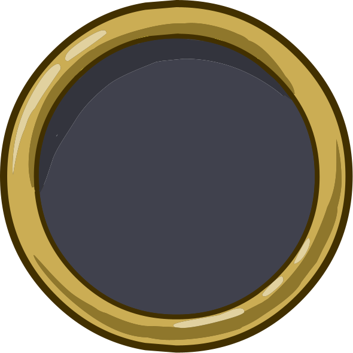
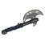
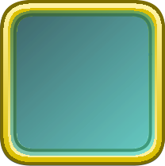
AxeStarter1
M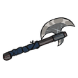
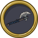
Pillow · placa 80 pxDungeon Blitz · Armería
FFDec + Pillow · 8x → 56 px
Prueba de reconstrucción de iconos de equipo con las capas reales del cliente: origen común desde los bounds del SWF, orden de capas, ColorSwap y composición con placa y ranura del juego.
Sin inventar arte. Los tres objetos salen de Gfx_Paladin_1.swf y de sus entradas de GearTypes.xml. La UI sale de UI_1, UI_4 y UI_Library.
01 · Muestra
Una placa por rareza, una ranura común y el icono a 56 px y 112 px. La placa pequeña de la derecha es la composición real generada con Pillow.





Pillow · placa 80 px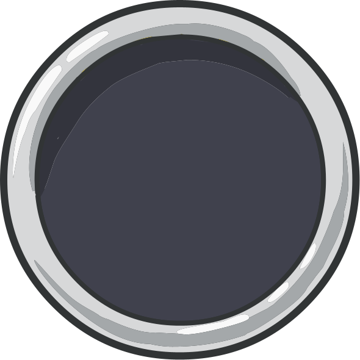
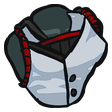
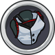
Pillow · placa 80 px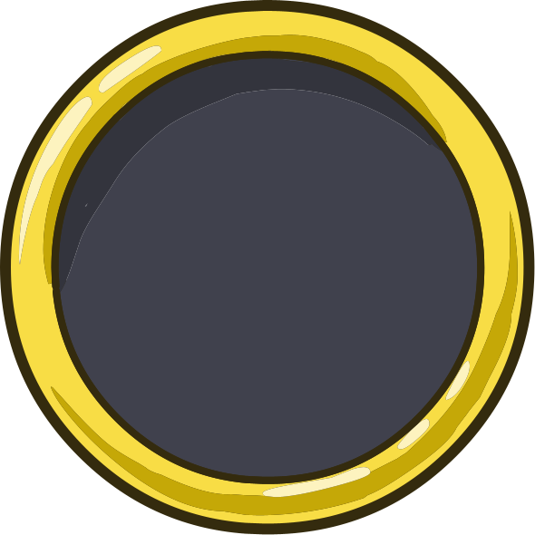
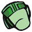
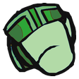
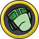
Pillow · placa 80 px02 · Legibilidad
El icono se genera desde el render a 8x y se reduce con LANCZOS. A 32 px el hacha y la armadura siguen leyéndose; el guante pierde el detalle de la muñeca.
03 · UI
Iconos de clase, placas, ranura, máscaras y el icono de engranaje. Las máscaras se muestran sobre damero porque son rellenos planos para mask-image o tintado.
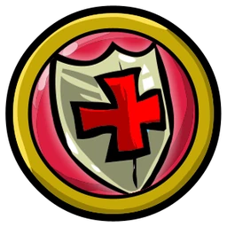
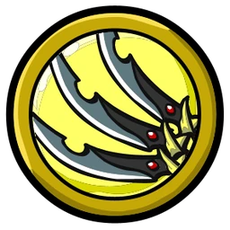
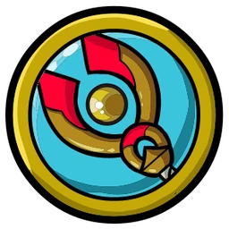
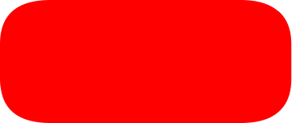
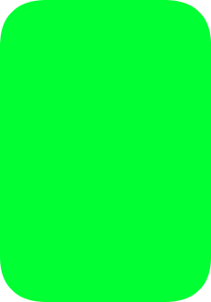
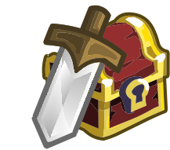
04 · Decisiones
twips / 20 * zoom. Después se recorta el alfa y se centra. LocOffset es 0,0 en todas las entradas revisadas.SwordGrip + Sword. Armadura: una capa. Guantes: mano HandFist4 + tres capas GloveLeather03. El orden visual funciona; la animación real puede usar otras poses.DungeonBlitz.as (gPaleBrown, gSilver, gBronze…). Render a 8x y reducción LANCZOS; los flecos de antialias no se ven a 56 px.ArmorLion04$Female es a_Torso2_ArmorLion04Female (3948). La clase 3600 existe, pero ninguna entrada de GearTypes.xml la referencia.gBronze, gSilver y gGold y con los nombres de las placas; se usará como decisión de spike.a_ArmoryWindow es una captura de referencia, no un frame; los marcos se reconstruirán con piezas y border-image.